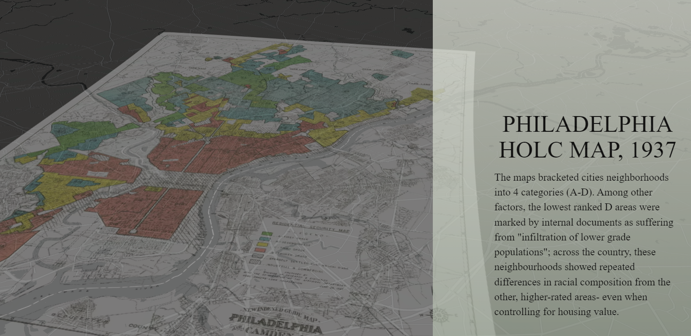
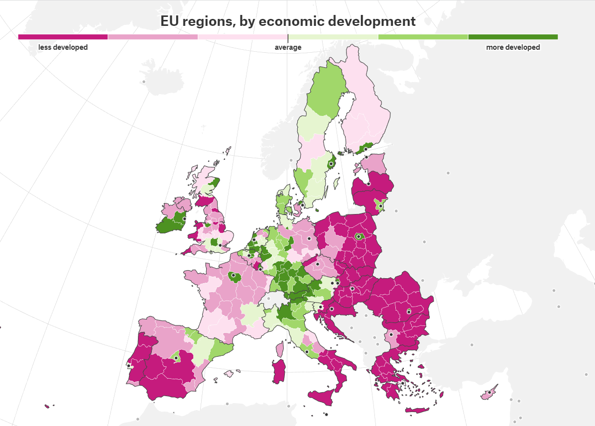
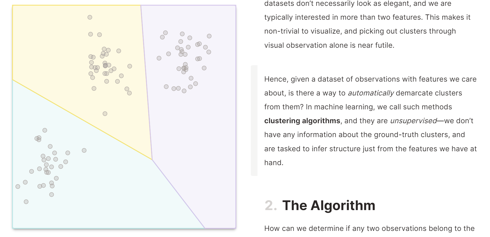
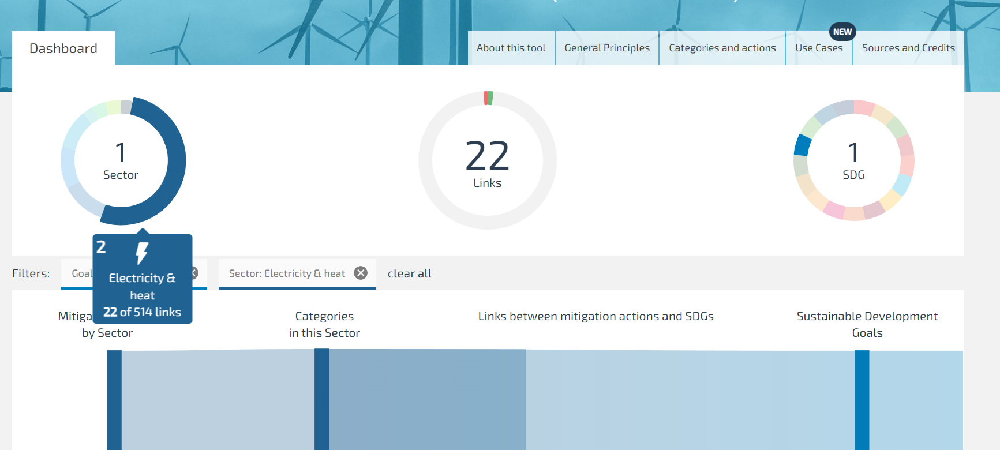
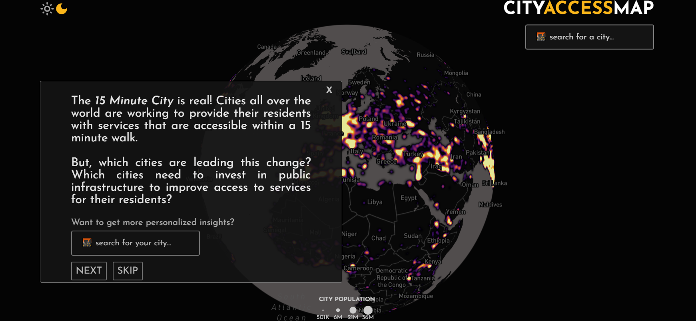

Digital Journalism ideas for UHC
It is of interest to tell convey stories within data. Academics usually use models to summarize and capture these stories but models and manuscript are not accessible to the public - ultimately limiting the scope of impact our research has to the academic realm.
However there is another way to tell stories within the data which is to utilize interactivity and data visualiations. For example, in the digital journalism field a particular long form visulization medium called scrolly-telling or scollies are used to tell data driven stores in an engaging and accessible way
This document will introduce the various three types of scrollies and some examples. Some focus on pay-persons and utilize interactivity/visualization to tell a story within the story. Some focus on researchers and utilize interactivity/visualization to break down model results. Some are more analytics intensive focusing the ability to select parameters and see various outputs.
Story focus
The goal of a data story type scrolly is to tell a specific story within the data in a accessible and engaging medium to lay-persons (primary audience) as well as researchers (secondary audience). Some examples include:
Disparities in US Cities

https://jsteele2003.github.io/msdv_thesis/redlining/dist/index.html
EU Regions

Methods/model focus
Models are complex and are sometimes even difficult to digest by fellow researchers. These types of scrollies aim to make our model results more accessible to other researchers (primary audience) as well as lay-persons (secondary audience)
K-means clustering explained

Analytics focus
These types of products are more analytics intensive focusing the ability to select parameters and see various outputs. This is targeted towards people who want to explore data themselves and find a story relevant to them (primary audience policy makers or journalists) and all others (secondary audience: researchers/lay-person).
Policy Impact SCAN Tool

City Access Map
